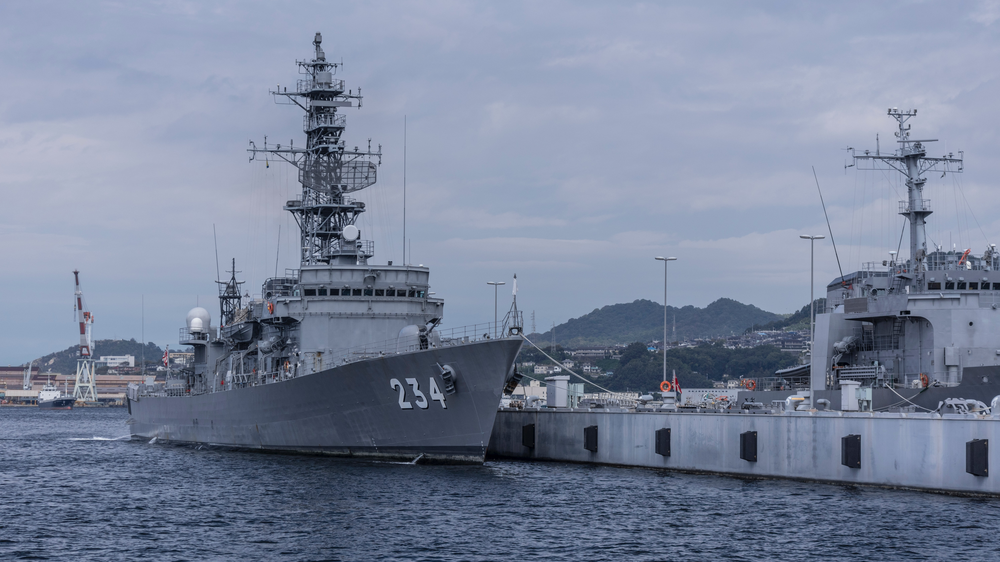

A navy, naval force, or maritime force is the branch of a nation's armed forces principally designated for naval and amphibious warfare; namely, lake-borne, riverine, littoral, or ocean-borne combat operations and related functions. It includes anything conducted by surface ships, amphibious ships, submarines, and seaborne aviation, as well as ancillary support, communications, training, and other fields. The strategic offensive role of a navy is projection of force into areas beyond a country's shores (for example, to protect sea-lanes, deter or confront piracy, ferry troops, or attack other navies, ports, or shore installations). 
The strategic defensive purpose of a navy is to frustrate seaborne projection-of-force by enemies. The strategic task of the navy also may incorporate nuclear deterrence by use of submarine-launched ballistic missiles. Naval operations can be broadly divided between riverine and littoral applications (brown-water navy), open-ocean applications (blue-water navy), and something in between (green-water navy), although these distinctions are more about strategic scope than tactical or operational division.